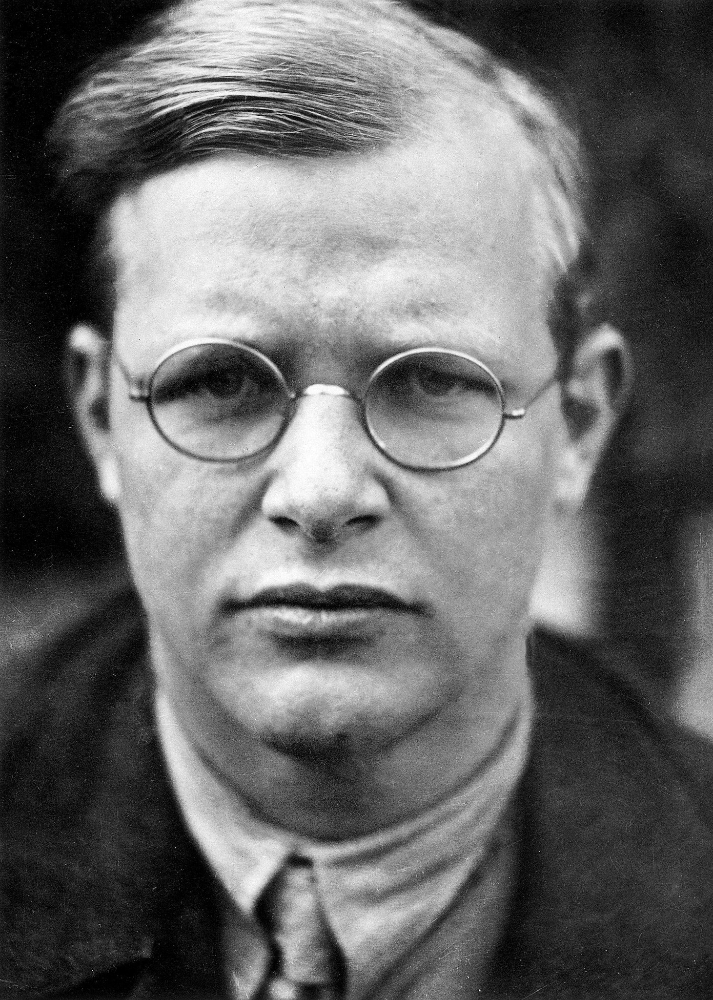

A German Lutheran pastor, theologian, anti-Nazi dissident, and key founding member of the Confessing Church. His writings on Christianity's role in the secular world have become widely influential.

Dietrich Bonhoeffer 1924
The following list is a timeline of Bonhoeffer's life
1906 - Dietrich and his twin sister Sabine are born on February 4
1923 - Bonhoeffer begins theological studies at Tubingen University
1930 - Bonhoeffer sails to New York and begins a teaching fellowship at Union Theological Seminary
1933 - Hitler is installed as Chancellor. Two days later, Bonhoeffer delivers a radio address on leadership attacking Hitler. He is cut off the air.
1943 - Bonhoeffer proposes and becomes engaged to Maria von Wedemeyer. On April 5 he is arrested and incarcerated at Tegel Prison, Berlin
1945 - Bonhoeffer is executed at Flossenbürg together with other key figures of the resistance